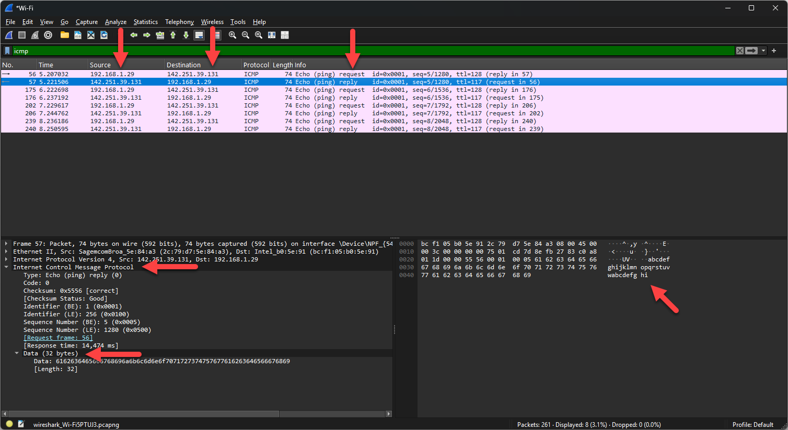

ICMP, het Internet Control Message Protocol, draagt de meldingen die netwerktoestellen
elkaar over de verbinding zelf sturen: foutmeldingen en berichten waarmee je een verbinding kan testen.
Het bekendste gebruik ervan is het commando ping.
Met ping google.be stuurt je computer een echo request naar die host, en de
host stuurt een echo reply terug. Windows stuurt er standaard vier, dus in Wireshark zie
je acht pakketten: telkens een request van jou naar de host en een reply van de host naar jou.
Daarmee weet je drie dingen. Je ziet het IP-adres dat bij de naam hoort, je weet dat de host bereikbaar is, en je ziet hoelang het pakket onderweg was.

De response time of round-trip time is de tijd die een pakket nodig heeft om naar de bestemming te reizen en weer terug te komen, uitgedrukt in milliseconden. Lager is beter. Het cmd-venster toont die tijd per pakket, en in Wireshark vind je ze bij een reply terug.
Een ping-pakket draagt data mee die geen betekenis heeft. Het doel van ping is te testen of een host
bereikbaar is, en de data dient alleen om het pakket op te vullen tot minstens 32 bytes. Windows gebruikt
daarvoor het alfabet: abcdefghijklmnopqrstuvwxyzabcdefghi.
Een reply betekent dat de host actief is op het netwerk. Blijft de reply uit, dan kan de host toch
bereikbaar zijn: hosts en firewalls blokkeren ICMP dikwijls bewust, zodat ze moeilijker te vinden zijn
voor wie een netwerk afzoekt. Ping je hogent.be, dan krijg je wel het IP-adres te zien
maar geen replies.